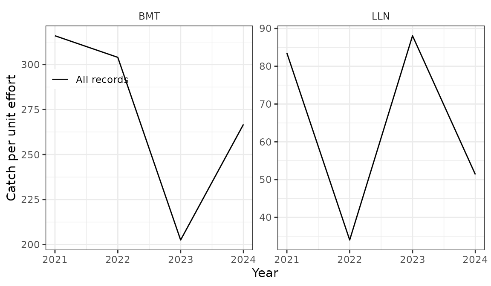

Landings and logbooks: gears and depth classes
Source:vignettes/landings_logbooks.Rmd
landings_logbooks.RmdThe landings table of a pax database is the landings
register by year, month, gear, country and ICES area; the
logbook table the compiled logbooks by tow, with position,
depth and effort. This vignette covers the two things that most often go
wrong with them: gears and depths. All data here are simulated.
library(pax)
library(dplyr, warn.conflicts = FALSE)
pcon <- pax_connect()Gear codes
Both tables have the gear as an MFDB gear code
(mfdb_gear_code: BMT bottom trawl, LLN longline, DSE Danish
seine, GIL gillnet, …), mapped from the MFRI gear code
(gear_id, veiðarfæri) with
biota.gear_mapping. The mapping is in the package as
gear_mapping:
data("gear_mapping", package = "pax")
gear_mapping |> filter(gear_id %in% c(1, 2, 6, 9, 91, 92))
#> gear_id mfdb_gear_code source mfdb_gear_code_weight
#> 1 1 LLN biota.gear_mapping LLN
#> 2 2 GIL biota.gear_mapping GIL
#> 6 6 BMT biota.gear_mapping BMT
#> 9 9 NPT biota.gear_mapping NPT
#> 57 91 GIL pax GIL
#> 58 92 GIL biota.gear_mapping GILbiota.gear_mapping has no MFDB code for gear 91
(monkfish gillnet), so those rows have mfdb_gear_code NA in
pax_db; tidypax mapped it to GIL. Monkfish lost most of its
commercial samples in 2004–2015 and about 14 kt of landings moved to
“other” (14-mon). gear_mapping adds gear 91 as GIL
(source == "pax"), and
pax_fill_mfdb_gear_code() fills the missing codes from
it:
landings <- expand.grid(
year = 2021:2024,
month = 1:12,
gear_id = c(6, 1, 91, 9)
)
landings$species <- 1
landings$ices_area <- "5a"
landings$country <- "Iceland"
landings$boat_id <- landings$gear_id * 100 + landings$month %% 3
gm <- gear_mapping[gear_mapping$source == "biota.gear_mapping", ]
landings$mfdb_gear_code <- as.character(gm$mfdb_gear_code)[
match(landings$gear_id, gm$gear_id)
]
landings$catch <- c(`6` = 3e5, `1` = 2e5, `91` = 5e4, `9` = 1e4)[
as.character(landings$gear_id)
]
pax_import(pcon, landings)
tbl(pcon, "landings") |>
count(gear_id, mfdb_gear_code) |>
collect()
#> # A tibble: 4 × 3
#> gear_id mfdb_gear_code n
#> <dbl> <chr> <dbl>
#> 1 1 LLN 48
#> 2 9 NPT 48
#> 3 91 NA 48
#> 4 6 BMT 48
tbl(pcon, "landings") |>
pax_fill_mfdb_gear_code() |>
count(gear_id, mfdb_gear_code) |>
collect()
#> # A tibble: 4 × 3
#> gear_id mfdb_gear_code n
#> <dbl> <chr> <dbl>
#> 1 1 LLN 48
#> 2 6 BMT 48
#> 3 91 GIL 48
#> 4 9 NPT 48Only missing codes are filled. 13-cas does this on its stations before the length distributions; do it on the landings too before grouping by gear.
Landings by gear group
pax_landings_by_gear() groups gears with a
gear_group list. The names are the groups, the values the
MFDB codes in them; pax_add_other() marks the default group
for every gear not listed, and an NA in a group takes the
rows with no gear:
gear_group <- list(
BMT = c("BMT", "NPT", "SHT", "PGT"),
LLN = "LLN",
GIL = "GIL",
Other = pax_add_other()
)
by_gear <- tbl(pcon, "landings") |>
pax_fill_mfdb_gear_code() |>
pax_landings_by_gear(gear_group = gear_group)
by_gear |>
group_by(year, gear_name) |>
summarise(catch_t = sum(catch, na.rm = TRUE) / 1e3, .groups = "drop") |>
collect() |>
tidyr::pivot_wider(names_from = gear_name, values_from = catch_t) |>
arrange(year)
#> # A tibble: 4 × 4
#> year GIL BMT LLN
#> <int> <dbl> <dbl> <dbl>
#> 1 2021 600 3720 2400
#> 2 2022 600 3720 2400
#> 3 2023 600 3720 2400
#> 4 2024 600 3720 2400catch is in kg. Without the default group, landings with
other gears get no group: in pax_si_scale_by_landings()
they are left out of the raising, with a message. The same
gear_group lists drive the age–length keys and the advice
and tech report figures
(hafroreports::hr_advice_plot_landings(),
hr_techreport_plot_landings_gear()), so use the stock’s own
groups there.
The landings by fishing year (September to August, from 1991). Two
caveats in this version of pax: catch_kt is
sum(catch) / 1000, so it is in tonnes when
catch is in kg, as in the landings table; and
the function needs dplyr attached (library(dplyr)), as it
calls sql() without dplyr::.
tbl(pcon, "landings") |>
pax_landings_fishingyear_summary(ignore_final_year = FALSE) |>
collect()
#> # A tibble: 5 × 2
#> fishing_year catch_kt
#> <chr> <dbl>
#> 1 2020/2021 4480
#> 2 2021/2022 6720
#> 3 2022/2023 6720
#> 4 2023/2024 6720
#> 5 2024/2025 2240Depth classes of logbook records
pax_add_ocean_depth_class() puts each record in a depth
class from its ocean_depth column. Records with no recorded
depth get the mean depth of the bathymetry around their own position:
their h3 cells are matched to the ocean_depth table at
fill_resolution (default 6, cells of about 36 km²), and at
two coarser resolutions where that finds nothing. Records without a
position stay “Unknown”. The bathymetry comes from
pax_marmap_ocean_depth() (a cached NOAA grid around
Iceland, imported by pax_from_mar()).
pax_import(pcon, pax_marmap_ocean_depth())
#> This is removed when the R session ends.
#> • Extensions are re-downloaded each session.
#> • Secrets are lost.
# Tows at the centres of random gridcells (statistical subrectangles)
data("gridcell", package = "pax")
set.seed(3)
cells <- gridcell[sample(nrow(gridcell), 100, replace = TRUE), ]
logbook <- data.frame(
year = rep(2021:2024, each = 25),
month = sample(1:12, 100, replace = TRUE),
species = 1,
mfdb_gear_code = sample(c("BMT", "LLN"), 100, replace = TRUE),
gridcell = cells$gridcell,
lat = cells$lat,
lon = cells$lon
)
logbook$ocean_depth <- round(runif(100, 40, 500))
logbook$ocean_depth[1:20] <- NA # no depth recorded
logbook$lat[1:3] <- logbook$lon[1:3] <- NA # and no position either
logbook$catch <- round(rlnorm(100, 7, 1))
logbook$tow_time <- ifelse(logbook$mfdb_gear_code == "BMT", 240, NA)
logbook$tow_hooks <- ifelse(logbook$mfdb_gear_code == "LLN", 20000, NA)
logbook$tow_num_nets <- NA_real_
logbook$catch_total <- logbook$catch * 2
pax_import(pcon, logbook)
tbl(pcon, "logbook") |>
mutate(depth = ifelse(is.na(ocean_depth), "filled", "recorded")) |>
pax_add_ocean_depth_class(breaks = c(0, 100, 200, 300)) |>
count(depth, ocean_depth_class) |>
collect() |>
arrange(ocean_depth_class) |>
tidyr::pivot_wider(names_from = depth, values_from = n, values_fill = 0)
#> # A tibble: 5 × 3
#> ocean_depth_class filled recorded
#> <chr> <dbl> <dbl>
#> 1 0-100 2 9
#> 2 100-200 1 16
#> 3 200-300 0 17
#> 4 300+ 14 38
#> 5 Unknown 3 0breaks are the class bounds; depths beyond the last
bound form a plus group (“300+”).
hafroreports::hr_techreport_plot_catchdepth() uses this for
the catch by depth figure.
Pitfall: before pax branch smn-survey
(commit a56fe05), every missing depth got one and the same value (the
mean of the whole bathymetry table, about 950 m), so all records without
a depth landed in the deepest class. 07-bli and 60-norway-redfish work
around it with their own depth classes (bli_depth_class(),
sfv_depth_class()), from the mean depth of the gridcell.
With a current pax the workaround is not needed, but the numbers differ
a little (cells around the position instead of the gridcell). Check the
share of catch in “Unknown” and in the classes of filled records.
CPUE
pax_add_cpue() takes the effort from the first of tow
time (hours), hooks (thousands) or nets; Danish seine hauls count as
one. Records with none of these get effort_na (default 1,
i.e. one hour); NULL leaves them out.
tbl(pcon, "logbook") |>
pax_add_cpue() |>
pax_logbook_cpue_plot()
hafroreports::hr_techreport_plot_cpue() draws the same
figure from a pax_db.